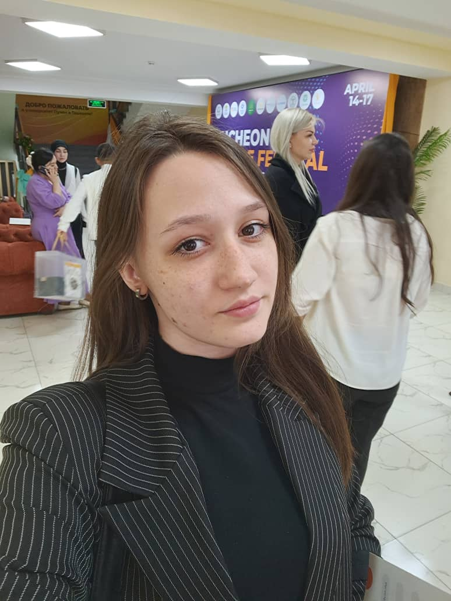
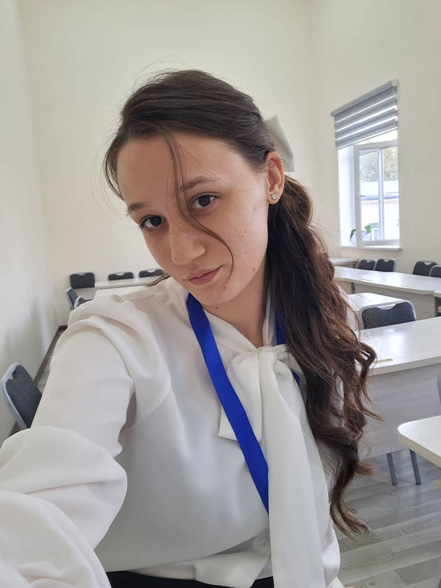

Макеева Валерия Викторовна
Практикующий психолог в школьной среде. Эмоциональное благополучие ребёнка, адаптация к саду и школе, отношения со сверстниками и взрослыми, навыки саморегуляции.


Обо мне
Я — детский и подростковый психолог, практикующий в школьной среде. В своей работе я уделяю особое внимание эмоциональному благополучию ребёнка, его адаптации к образовательной среде, отношениям со сверстниками и взрослыми, а также формированию навыков саморегуляции.
Я считаю, что за каждым поведением ребёнка стоят определённые переживания, потребности и особенности развития. Поэтому моя задача — не просто скорректировать поведение, а помочь ребёнку понять себя, научиться выражать чувства, находить конструктивные способы решения трудностей и чувствовать себя увереннее.
В работе я опираюсь на индивидуальный подход, возрастную психологию, методы когнитивно-поведенческой терапии и элементы арт-терапевтической работы в пределах своей подготовки. Использую беседу, наблюдение, игровые и творческие упражнения, а также практики развития эмоционального интеллекта.
Отдельное направление моей работы — взаимодействие с родителями. Я помогаю взрослым лучше понимать эмоциональные и поведенческие реакции детей, находить подходящие способы поддержки и выстраивать более доверительные отношения в семье.
Моя цель — создать безопасное пространство, в котором ребёнок сможет быть услышанным, а родители получат профессиональные рекомендации по вопросам его психологического благополучия.
Образование
Филиал РГПУ им. А. И. Герцена в г. Ташкент — «Педагог-психолог».
Бакалавриат, направление «Детский психолог» — возрастная и детская психология.
Магистратура «Психолого-педагогическое образование» — диагностика, сопровождение семьи.
Работаю по этическим принципам профессионального сообщества.
Дополнительные направления подготовки
Подходы и методы
Принципы моей работы
С кем и с чем я работаю
Поддержка детей и подростков на разных этапах развития — с учётом возраста, особенностей и жизненной ситуации. Работа с родителями детей любого возраста — по вопросам воспитания, кризисов и отношений в семье.
Эмоциональное развитие, адаптация к детскому саду, сепарация, первые навыки самостоятельности. Важная часть — консультации родителей.
Детские страхи, эмоциональные реакции, адаптация к саду, общение со сверстниками, саморегуляция, подготовка к школе. Игровые и творческие методы.
Школьная адаптация, тревожность, трудности обучения, самооценка, отношения с одноклассниками, эмоциональная регуляция и уверенность.
Перепады настроения, сложности в общении, конфликты, принятие себя, давление сверстников, школьный стресс, личные границы.
Самооценка и идентичность, тревожность, стресс, отношения с родителями и сверстниками, мотивация, эмоциональные трудности, границы и переживания о будущем.
Эмоциональные трудности
- Тревожность, страхи, повышенное волнение
- Неуверенность, низкая самооценка
- Трудности в распознавании и выражении эмоций
- Раздражительность, эмоциональные перепады
- Переживания из-за ошибок, оценок и ожиданий взрослых
Школьные трудности
- Адаптация к школе и новому классу
- Страх отвечать у доски, контрольные
- Мотивация к учёбе
- Конфликты с учителями и сверстниками
- Одиночество, трудности общения, буллинг
Поведение и отношения
- Частые конфликты с родителями
- Правила и границы
- Импульсивность и самоконтроль
- Ревность между братьями и сёстрами
- Дружба и общение со сверстниками
Семейные и жизненные изменения
- Развод или расставание родителей
- Переезд, смена школы и окружения
- Появление нового члена семьи
- Утрата и сложные события — в рамках компетенции
- Поддержка в период взросления
С чем я не работаю — честно
Чтобы не навредить, при этих запросах я направляю к профильному специалисту:
- Клинические состояния. Не заменяю врача-психиатра и клинического психолога. При подозрении на серьёзное расстройство рекомендую профильного специалиста.
- Острые кризисы. При угрозе жизни, суицидальных намерениях и тяжёлом самоповреждении нужна экстренная кризисная помощь, а не обычная консультация.
- Медицина. Не назначаю лекарства, не ставлю медицинские диагнозы, не заменяю обследование у врачей.
- Узкая диагностика. Комплексная нейропсихологическая и клиническая диагностика — только у специалистов с нужной квалификацией.
Как строится работа: 7 этапов
Беседа с родителями, наблюдение и игровая диагностика ребёнка.
Цели, формат, частота встреч, согласие родителей.
Выводы и памятки: что происходит и как помочь дома.
Навыки для ребёнка и родителей: эмоции, поведение, общение.
Регулярные встречи в игровом формате, закрепляем изменения.
Смотрим динамику вместе с родителями.
Итоги, рекомендации семье и план профилактики.
Остаёмся на связи: вопросы родителей после курса.
Приём
Принимаю по предварительной записи в Ташкенте и онлайн.
| День | Приём |
|---|---|
| Понедельник | по записи |
| Среда | по записи |
| Пятница | по записи |
| Остальные дни | выходные |
Тёплые слова
Имена изменены, детали опущены — так я берегу конфиденциальность каждой семьи.
«Сын боялся оставаться в саду, каждое утро со слезами. После встреч и занятий дома адаптация прошла спокойно.»
«Дочка стала спокойнее засыпать, ушли страхи темноты. Нам тоже стало понятнее, как реагировать.»
«Подросток закрылся, грубил. Валерия Викторовна нашла подход и к нему, и к нам. Дома стало теплее.»
Спрашивали? Отвечаю
Записаться на консультацию
Оставьте заявку — отвечу и предложу удобное время. Приём: понедельник, среда, пятница.